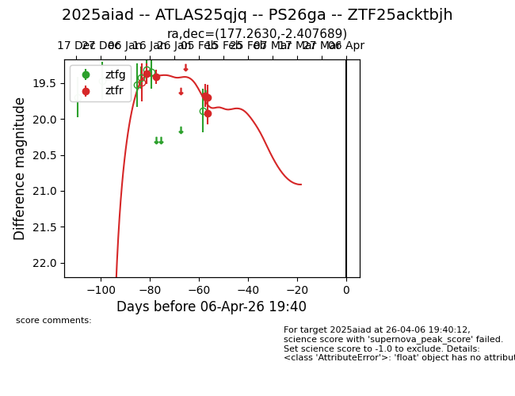
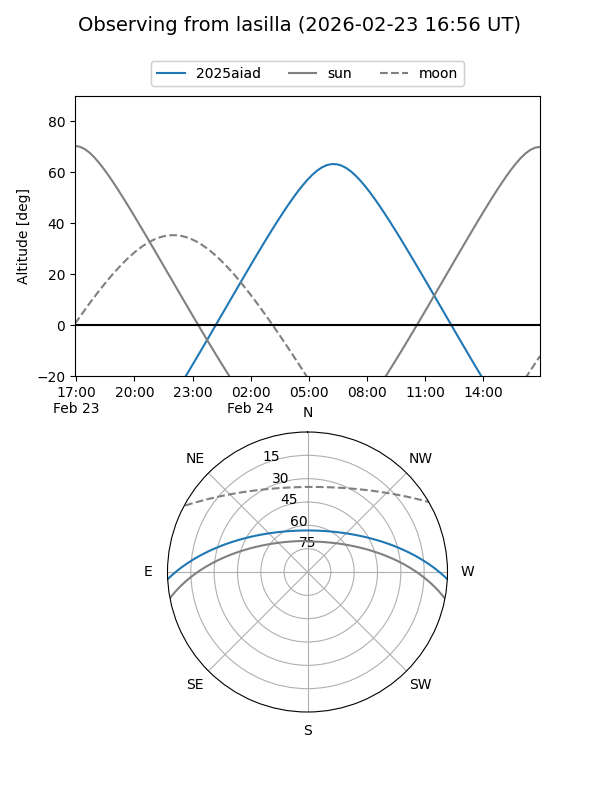
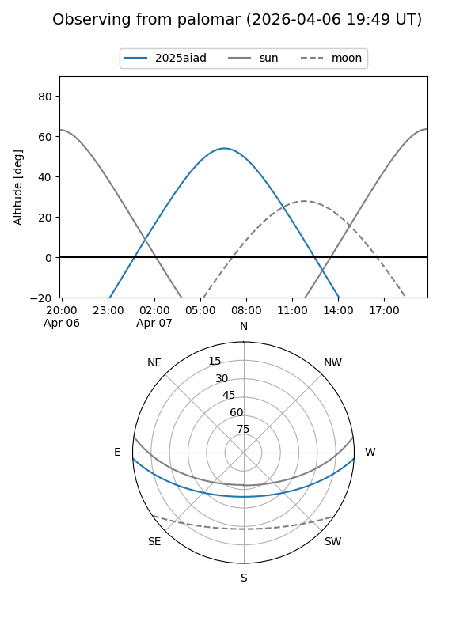
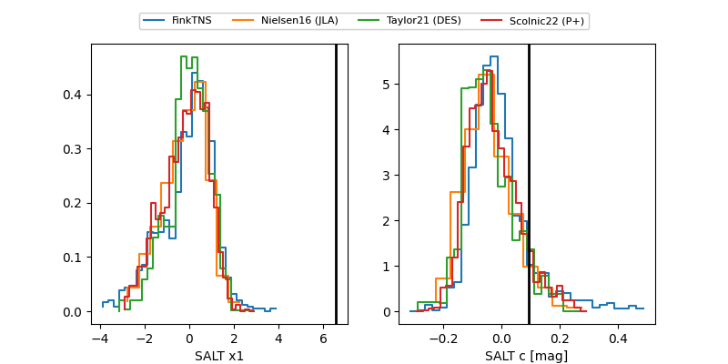

2025aiad
Target 2025aiad at 2026-01-24 19:46
Aliases and brokers:
FINK: link
Lasair: link
ALeRCE: link
TNS: link
YSE: link
alt names
ZTF25acktbjh (ztf,fink_ztf)
2025aiad (tns,yse)
ATLAS25qjq (atlas)
PS26ga (panstarrs)
Coordinates:
equatorial (ra, dec) = 177.2630,-2.40769
equatorial (HMS+DMS) = 11:49:03.12,-02:24:27.68
galactic (l, b) = (273.5044,+56.85666)
Flags:
Photometry:
last ztfr=19.42
2 ztfr detections
Lightcurve

Visibility


Additional plots
